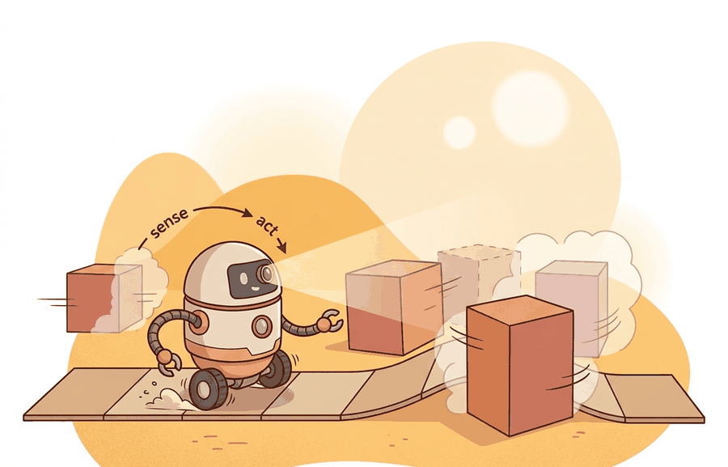

"The end-to-end policy learned something. What it learned is between the gradients and the weights, and neither will tell you."
A Diagnostic Engineer With No Intermediate Representations

The ideas introduced here are extended in section 3.4, which shows how learned policies are embedded inside hybrid and hierarchical architectures. The behavior-cloning formulation used in the worked example is treated in full in section 21.2, and the action-chunking and diffusion variants that address compounding errors are developed in section 22.2. Vision-language-action models, including RT-2 cited below, are examined as a class in section 34.2.
A robot hand picks up a mug by reading raw pixels and writing motor torques, with no hand-coded depth estimator, no explicit grasp planner, no rule saying "align fingers before closing." The entire skill lives in a single neural network trained end-to-end on demonstrations. This is not a thought experiment: systems like RT-2 and ACT do exactly this today, and they generalize to objects they have never touched. The reason this matters now is that the alternative, stacking separately tuned modules, accumulates error at every handoff and breaks the moment one module drifts. Here you will understand why a monolithic learned policy can outperform that pipeline, what the training objective actually optimizes, and where the architecture bites back when things go wrong.
This section develops the technical contract for end-to-end learned policy pipeline into a usable mental model. First we define the object of study, then we connect it to the agent loop, then we test it with a compact implementation.
The key question in End-to-end learned policy pipeline is practical: what must the agent know, what can it observe, what action is available, and what evidence shows that the action worked under the stated conditions?
A representation earns its place when it changes the measurable action interface. In end-to-end learned policy pipeline, the reader should keep asking which decision becomes easier, safer, or more reliable.
Theory
For End-to-end learned policy pipeline, the practical design rule is to make the interface inspectable before optimization begins: inputs, outputs, units, latency, bounds, and failure labels should all be visible in the saved artifact.
An end-to-end policy is motivated by the handoff problem in modular stacks: if perception produces exactly the wrong abstraction, the planner never sees the information it needed. Instead of committing to intermediate symbols, the policy learns a direct map from observations and goals to actions:
$$a_t = \pi_\theta(o_{\le t}, g), \qquad \theta^\star = \arg\min_\theta \sum_{(o,g,a^\star)} \ell(\pi_\theta(o,g), a^\star).$$
The loss $\ell$ is often a regression loss for continuous actions, a cross-entropy loss for discrete action tokens, or a diffusion-style denoising loss for action chunks. The benefit is representation freedom: the model can keep visual, temporal, and language cues that a hand-written state estimator might discard. The cost is diagnostic opacity without intermediate symbols: when the policy fails, the builder must probe data coverage, action scaling, temporal context, embodiment mismatch, and distribution shift rather than opening a single broken module. To put the coverage stakes concretely: a behavior-cloning policy trained on 50 in-distribution demos typically achieves 80-90% task success within that distribution, yet drops to under 20% success on observations just 2x outside the training range, while adding only 150 additional diverse demos can recover performance above 70% without any architecture change.
Algorithm: Behavior-Cloning Policy Training and Coverage Audit
Input: demonstration dataset $\mathcal{D} = \{(o_i, g_i, a_i^\star)\}_{i=1}^{N}$, learning rate $\alpha$, policy network $\pi_\theta$ with parameters $\theta$, query observation $o_q$ at deployment time
Output: trained parameters $\theta^\star$, predicted action $\hat{a} = \pi_{\theta^\star}(o_q, g)$, coverage score $c(o_q)$
- Compute per-dimension mean $\mu_a$ and standard deviation $\sigma_a$ over all $a_i^\star \in \mathcal{D}$; normalize actions as $\tilde{a}_i = (a_i^\star - \mu_a) / \sigma_a$. Store $(\mu_a, \sigma_a)$ alongside the checkpoint.
- Initialize $\theta$ (e.g., random or from a pretrained backbone). Set iteration counter $t \leftarrow 0$.
- Sample a mini-batch $\mathcal{B} \subset \mathcal{D}$. Compute the imitation loss: $\mathcal{L}(\theta) = \frac{1}{|\mathcal{B}|} \sum_{(o,g,\tilde{a}^\star) \in \mathcal{B}} \ell\!\left(\pi_\theta(o, g),\, \tilde{a}^\star\right)$.
- Compute gradient $\nabla_\theta \mathcal{L}(\theta)$ via backpropagation.
- Update parameters: $\theta \leftarrow \theta - \alpha\, \nabla_\theta \mathcal{L}(\theta)$. Increment $t$.
- Repeat steps 3-5 until convergence or the iteration budget is exhausted. Record $\theta^\star \leftarrow \theta$.
- At deployment, obtain query $o_q$. Predict raw action $\hat{a}_{\text{raw}} = \pi_{\theta^\star}(o_q, g)$; recover physical units: $\hat{a} = \sigma_a \cdot \hat{a}_{\text{raw}} + \mu_a$.
- Compute coverage score: $c(o_q) = \frac{1}{k}\sum_{j=1}^{k} \|o_q - o_{(j)}\|_2$, where $o_{(1)}, \ldots, o_{(k)}$ are the $k$ nearest training observations to $o_q$.
- If $c(o_q)$ exceeds a threshold $\tau$, flag the query as out-of-distribution before accepting $\hat{a}$.
- Log $(o_q, g, \hat{a}, c(o_q))$ as a structured failure record if the rollout does not succeed, to distinguish coverage failures from representation-alignment failures.
Before training, normalize every action dimension to zero mean and unit variance using statistics computed over the full demonstration dataset, then store those statistics alongside the model checkpoint. LeRobot's normalize_action utility and ACT's reference implementation both do this automatically, but custom pipelines routinely skip it. A policy trained on raw joint-angle targets (which span different ranges per joint) will saturate the output head on joints with large variance and produce near-zero commands on joints with small variance, causing the robot to appear "frozen" on some axes while overcorrecting on others. The fix at inference time is to apply the inverse transform using the saved mean and std before sending commands to the controller.
Consider a specific case: RT-2 (Brohan et al., 2023) fine-tunes a 55-billion-parameter vision-language model to output robot joint commands as text tokens, achieving 62% success on novel objects and categories not present in the robot training data by transferring web-scale visual semantics. Action Chunking with Transformers (ACT, Zhao et al., 2023) takes a different point on the design curve: a smaller 80-million-parameter transformer trained on 50 human demonstrations per task achieves 80-90% success on precise bimanual manipulation by predicting 100-millisecond action chunks that smooth out compounding errors. OpenVLA (Kim et al., 2024) shows the same VLA recipe scales to open weights at 7 billion parameters, reaching comparable manipulation success to RT-2 at roughly one-tenth the inference cost. These three systems span the specificity-versus-cost tradeoff the formula above leaves open: the observation space and action tokenization differ, but the direct $o \to a$ mapping is constant across all three.
End-to-end policies outperform modular stacks when the right intermediate representation is unknown or contested: tasks that require fusing appearance, geometry, and language in ways no hand-written state estimator was designed to handle. They struggle when the training distribution is narrow relative to deployment variation, when the action horizon exceeds the model's temporal context window, or when safety requires a hard constraint the loss function cannot reliably enforce. A practical decision rule: choose end-to-end when you have broad, diverse demonstrations and no reliable symbolic state; choose a modular or hybrid stack when you have well-defined state variables, explicit safety limits, or a deployment environment that will shift faster than you can retrain.
The mechanism in End-to-end learned policy pipeline is the contract between representation and action. Name what enters the module, what leaves it, which assumptions make that transformation valid, and which log would reveal a bad handoff.
Worked Example
An end-to-end policy learns the map $a = \pi_\theta(o, g)$ directly from demonstrations, with no hand-written state in between. The example fits a minimal behavior-cloning policy by least squares, then makes the section's central point: when it fails, the first diagnostic is not "open a module" but "audit data coverage." We do that with a nearest-neighbor check against the training set.
import numpy as np
rng = np.random.default_rng(0)
# Demonstrations: observation = [obj_x, obj_y], goal g = 1 (pick).
# Expert action = unit vector from a fixed gripper origin to the object.
N = 200
O = rng.uniform(-1, 1, size=(N, 2)) # objects in a seen region
A = O / np.linalg.norm(O, axis=1, keepdims=True) # expert reach direction
# Behavior cloning by least squares: a = O @ W (the whole "training run").
W, *_ = np.linalg.lstsq(O, A, rcond=None)
def policy(o):
return o @ W
def coverage(o, k=5): # distance to k nearest demos
d = np.linalg.norm(O - o, axis=1)
return np.sort(d)[:k].mean()
for label, o in [("in-distribution", np.array([0.3, -0.4])),
("far OOD", np.array([3.0, 3.0]))]:
a = policy(o)
err = np.linalg.norm(a - o / np.linalg.norm(o))
print(f"{label:16s} cover={coverage(o):.2f} action_err={err:.2f}")
Expected output: the in-distribution query has small coverage distance and bounded action error; the far out-of-distribution query has a large coverage distance and a much larger error (the linear policy cannot extrapolate the normalized reach direction it never saw). That contrast is the diagnosis: the policy is not "broken," it is being asked about a region it never saw. This is why the first isolation test for an end-to-end policy is a coverage audit, not a module trace, because the architecture deliberately removed the modules you would otherwise inspect.
For End-to-end learned policy pipeline, the hand-built fragment is a visibility tool. Production work should move to maintained stacks such as Hugging Face Transformers, open VLMs, OpenVLA, openpi, LeRobot, and tool-calling planners once the section has made the interface, logging contract, and failure recovery path explicit.
Practical Recipe
- Write the observation, action, and success metric before choosing a model.
- Build a baseline that is simple enough to debug by inspection.
- Add the library implementation only after the baseline behavior is understood.
- Record failures as structured cases: perception error, state error, planning error, control error, or evaluation error.
- Run at least one perturbation test before trusting the result.
The common mistake in End-to-end learned policy pipeline is to celebrate the component score before checking the closed-loop handoff. The failure usually appears at the boundary: stale state, wrong frame, delayed action, saturated actuator, or metric that ignores the real task cost.
A robotics team using end-to-end learned policy pipeline should log not only final success, but intermediate observations, chosen actions, controller status, and recovery events. The logs reveal whether the method is solving the task or merely passing the easiest episodes.
End-to-end learning removes the hand-coded middle. It also removes several convenient places to point when the robot gets creative.
For End-to-end learned policy pipeline, treat frontier claims as hypotheses until they expose enough detail to reproduce the result: data boundary, embodiment, controller interface, evaluation panel, and failure cases.
Can you name the observation, state estimate, action, success metric, and most likely failure mode for end-to-end learned policy pipeline? If not, the system boundary is still too vague.
End-to-end learned policy pipeline becomes useful when it is tied to a closed-loop contract for how perception, estimation, planning, learning, and control are arranged into a system. The contract names the observation stream, the action representation, the timing budget, the safety boundary, and the result artifact. That is the bridge between a readable concept and a system a skeptical builder can test.
For End-to-end learned policy pipeline, separate the conceptual claim, the systems claim, and the evidence claim. A good explanation, a clean API, and one successful rollout are different kinds of evidence, and the section should keep them distinct.
| Tool or Library | Role in This Topic | Builder Advice |
|---|---|---|
| ROS 2 | separates system modules while preserving message contracts and timing | Use it when the hand-built contract is clear and the experiment needs repeatable runs. |
| MuJoCo | gives architecture choices a repeatable simulated world for stress tests | Use it when the hand-built contract is clear and the experiment needs repeatable runs. |
| LeRobot | anchors modern policy architectures in reusable datasets and policy APIs | Use it when the hand-built contract is clear and the experiment needs repeatable runs. |
For End-to-end learned policy pipeline, a robust implementation starts with one inspectable baseline whose artifact records observations, actions, units, timestamps, seeds, termination reasons, and the perturbation applied. The maintained-tool version is useful only if it preserves that schema and lets the comparison remain construct-matched.
- Write a one-paragraph task contract with observation, action, success, failure, and safety fields.
- Start with the smallest simulator, dataset, or wrapper that exposes the task contract faithfully.
- Run one deterministic smoke test and one perturbation test before scaling.
- Save one artifact containing configuration, seed, metrics, traces, and failure labels.
- Compare methods only when the same script evaluates the same panel, split, seed set, and metric.
When End-to-end learned policy pipeline fails, avoid labeling the whole method as weak. First assign the failure to perception, state estimation, planning, control, timing, data coverage, or evaluation. Then rerun one controlled perturbation that isolates the suspected cause. This pattern turns a disappointing rollout into a reusable diagnostic asset.
For an end-to-end policy, the first isolation test is a nearest-neighbor audit of the training set: find the closest logged scenes, goals, and actions to the failed rollout. If the failed condition is absent, the diagnosis is coverage rather than architecture. If similar cases exist but the action scale, timing, or gripper convention differs, the diagnosis is representation alignment. If similar cases exist and conventions match, inspect the model's temporal window and action horizon before retraining.
End-to-end learned policy pipeline is useful when it makes the perception-action loop more reliable, not when it merely adds a more impressive model name.
Design a method-matched experiment for End-to-end learned policy pipeline. Specify the environment, observation schema, action interface, metric, and one perturbation that targets the section's core assumption.
What's Next?
Section 3.4 combines learned and engineered components in hybrid and hierarchical architectures.
Bibliography & Further Reading
Foundational References For This Section
Quigley, M. et al.. "ROS: an open-source Robot Operating System." (2009). https://www.ros.org/
The systems reference for modular robot software and message-passing architecture.
Todorov, E., Erez, T., and Tassa, Y.. "MuJoCo: A physics engine for model-based control." (2012). https://mujoco.org/
A widely used simulator for architecture and control experiments.
Brohan, A. et al.. "RT-2: Vision-Language-Action Models Transfer Web Knowledge to Robotic Control." (2023). https://arxiv.org/abs/2307.15818
A central reference for locating VLM and VLA models in embodied control stacks.